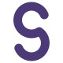
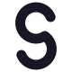
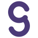
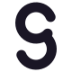
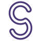
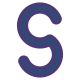
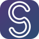
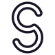
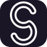
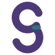

Seloma سِلوما
A modern AI Commerce platform. The identity is built to feel like intelligent technology that makes business easier — not like another chatbot.
Positioning
Emotional promise: “This AI is going to make my work easier.” Archetype mix: Magician 60% · Sage 25% · Creator 15%. Visual balance: 70% established SaaS, 30% innovative technology.
Intelligent
Geometry over illustration. Circular construction, precise terminals, no decoration.
Helpful
The mark reads as transformation: input → intelligence → action. Complexity becoming simple.
Premium
Restrained purple, deep blue, almost no teal. Works in one solid color. Quiet enough for enterprise sales.
Color
Deep intelligent purple carries innovation and the Magician. Blue is trust, used as a supporting partner. Teal is a rare accent only.
01 — Minimal geometric S
A single continuous stroke built from two circular bowls. The most reduced, most scalable letterform. Best when quiet authority matters.


02 — Intelligent negative space
The same bowls, interrupted at the center. The gap is the intelligence — a pause where complexity is transformed before action.


03 — Flow / transformation
A double-stroke ribbon: a channel of information moving through the S. Input at the top, resolved action at the bottom. Distinctive at large size, still an S at 16px as a solid-stroke favicon.





04 — Connection / intelligence
Two arcs and a central connector. Literal structure of Input → Intelligence → Action. Teal is used once, only on the connector, and disappears in monochrome.

Recommended system
Ship Direction 03 as the core identity. One geometry, three expressions: flow mark for brand moments, rounded-square icon for product surfaces, single-stroke cut for 16×16 favicons.
Wordmark
Outfit Medium for Latin — geometric, calm, slightly distinctive, not playful. Vazirmatn Medium for Persian — the closest modern match in stroke, rhythm, and seriousness. Tracking on Seloma is slightly open so S–e–l–o–m–a has air without looking spaced-out.
Usage
Clear space around the lockup equals the width of the letter o. Minimum digital lockup height: 24px. Minimum icon: 16px (use favicon.svg, not the flow cut). Never redraw the S as a typeface character.
Do
- Use the purple icon + ink wordmark on light UI
- Use the mono icon + white wordmark on photography or dark UI
- Keep the Persian lockup LTR: symbol on the left, سِلوما on the right
- Use a single solid color whenever print, embroidery, or legal docs require it
Don’t
- No robots, sparks, circuits, chat bubbles, carts, or gradients beyond the optional icon
- Do not neon-up the purple or add a second accent besides teal
- Do not outline, bevel, or drop-shadow the mark
- Do not replace the symbol with a font S